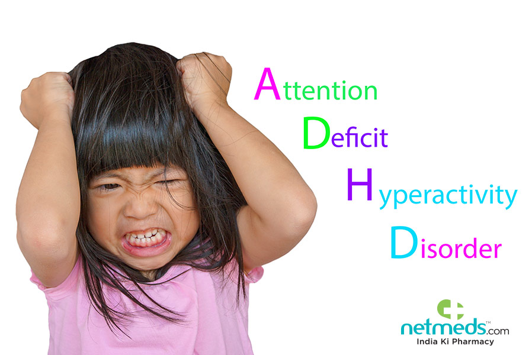

Symptoms of ADHD
The primary features of ADHD include inattention and hyperactive-impulsive behavior. ADHD symptoms start before age 12, and in some children, they're noticeable as early as 3 years of age. ADHD symptoms can be mild, moderate or severe, and they may continue into adulthood.
ADHD occurs more often in males than in females, and behaviors can be different in boys and girls. For example, boys may be more hyperactive and girls may tend to be quietly inattentive.
There are three subtypes of ADHD:
- Predominantly inattentive: The majority of symptoms fall under inattention.
- Predominantly hyperactive/impulsive: The majority of symptoms are hyperactive and impulsive.
- Combined: This is a mix of inattentive symptoms and hyperactive/impulsive symptoms.
Inattention
A child who shows a pattern of inattention may often:
- Fail to pay close attention to details or make careless mistakes in schoolwork
- Have trouble staying focused in tasks or play
- Appear not to listen, even when spoken to directly
Hyperactivity and Impulsivity

A child who shows a pattern of hyperactive and impulsive symptoms may often:
- Fidget with or tap his or her hands or feet, or squirm in the seat
- Have difficulty staying seated in the classroom or in other situations
- Be on the go, in constant motion
Typical Developmental Behavior vs. ADHD: Most healthy children are inattentive, hyperactive or impulsive at one time or another. It's typical for preschoolers to have short attention spans and be unable to stick with one activity for long. Even in older children and teenagers, attention span often depends on the level of interest.
Children who have problems in school but get along well at home or with friends are likely struggling with something other than ADHD. The same is true of children who are hyperactive or inattentive at home, but whose schoolwork and friendships remain unaffected.
When to See a Doctor
If you're concerned that your child shows signs of ADHD, see your pediatrician or family doctor. Your doctor may refer you to a specialist, such as a developmental-behavioral pediatrician, psychologist, psychiatrist or pediatric neurologist, but it's important to have a medical evaluation first to check for other possible causes of your child's difficulties.